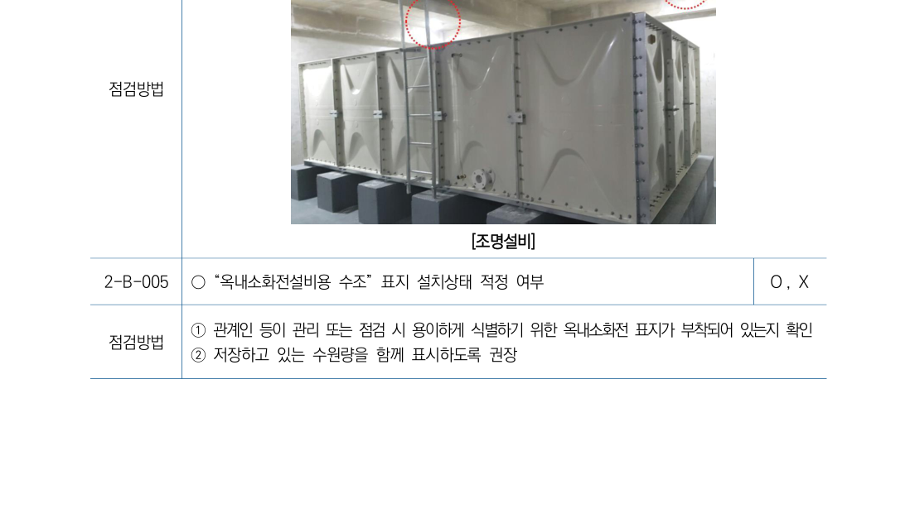

[옥내소화전설비 배관 및 방수] ├── 1. 방수성능 ── [방수압력: 0.17 MPa 이상 0.7 MPa 이하 / 방수량: 130 L/min 이상] ├── 2. 배관구경 ── [주배관 유속: 4 m/s 이하 / 수직배관: 50㎜ 이상 / 가지배관: 40㎜ 이상] ├── 3. 감압장치 ── [설치기준: 노즐선단 0.7 MPa 초과 시 / 종류: 감압밸브, 고정오리피스] └── 4. 개폐밸브 ── [급수개폐밸브: 개폐표시형(OS&Y) / 흡입측 배관: 버터플라이 설치 금지]
• 배관구경 기준: "수오-가사-주오사" (수직배관 50㎜ 이상, 가지배관 40㎜ 이상, 주배관 50㎜ 이상 & 4m/s 이하) • 감압장치 기준: "영칠 초과 시 오·밸 감압" (노즐선단 0.7 MPa 초과 시 고정 오리피스 또는 감압밸브 설치)

| 점검표 항목 | 소방청 매뉴얼 점검 요령 | 양호 기준 (NFTC) | 주요 불량 판정 사례 |
|---|---|---|---|
| 방수압 및 방수량 (2-C-002) |
최원격 소화전 2개 개방 후 직사관창 선단 D/2에서 피토게이지 측정 | 방수압: 0.17 ~ 0.7 MPa 방수량: 130 L/min 이상 |
• 0.17 MPa 미달 (양정 부족) • 0.7 MPa 초과 (반동력 과대) |
| 급수개폐밸브 (2-E-005) |
급수배관 밸브의 개폐표시형 구조 및 흡입측 밸브 형식 확인 | • 급수배관: 개폐표시형 • 흡입측: 버터플라이 외의 것 |
흡입측에 버터플라이 설치 (와류로 인한 캐비테이션) |